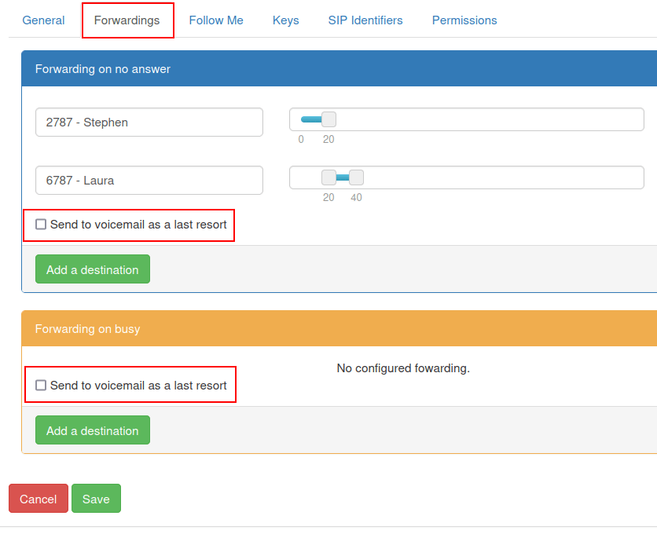
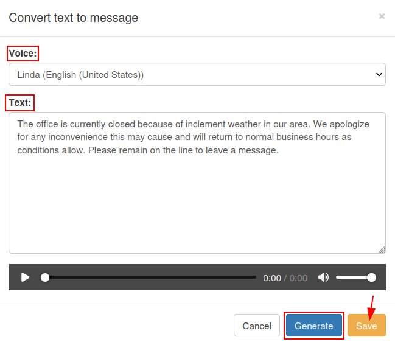

Buzones de voz y mensajes de audio¶
Gestionar los buzones de correo es importante para cualquier empresa. Una empresa necesita acceder a sus mensajes sin problemas y estar al tanto de las llamadas perdidas. Grabar mensajes de audio, agradecerle a una persona por llamar, o enviarlos a la extensión correcta, también es una forma increíble de personalizar la interacción con la empresa y comunicarnos con el cliente.
Este documento habla de a documentación de tanto el buzón de voz como los mensajes de audio en el portal administrativo de Axivox.
Configurar un idioma global¶
Para empezar a utilizar los mensajes de voz y audio con Axivox, el idioma global debe estar configurado en los ajustes del portal de administración de Axivox. Para ello, navegue a manage.axivox.com. Después de iniciar sesión en el portal, vaya a .
Desde aquí, puede configurar el idioma a francés, inglés, Español, o alemán.
Después, haga clic en Save (guardar) y después en Apply changes (aplicar cambios) en la esquina superior derecha de la página General Settings (ajustes generales) para implementar los cambios en producción.
Activar buzones de voz¶
Para que un usuario pueda utilizar el buzón de voz en Axivox, la función de buzón de voz debe estar activada en el portal administrativo de Axivox. Para comenzar a utilizar el buzón de voz con un usuario, navegue a manage.axivox.com. A continuación, inicie sesión con las credenciales de administrador apropiadas.
En el menú izquierdo del panel administrativo de Axivox haga clic en Users (usuarios).
Después, haga clic en el usuario específico para el que el buzón de voz debe estar activado. Debajo de la sección marcada Voicemail (buzón de voz), abra el menú desplegable y haga clic en Sí.
Finalmene, Guarde los cambios y después haga clic en Apply changes (aplicar cambios) en la esquina derecha de la pantalla.
Buzón de voz¶
El siguiente paso es configurar los buzones de voz individuales en el portal administrativo de Axivox. Para ingresar al portal, vaya a manage.axivox.com y después vaya a en el menú de la izquierda.
Si la opción de buzón de voz fue activada en el perfil del usuario, usando este proceso Activar buzones de voz, entonces se crea automáticamente un buzón de voz en la página Voicemails (buzón de voz).
Truco
Cabe señalar que parte del lenguaje del portal administrativo está en francés, ya que Axivox es una empresa belga. El idioma global sigue siendo una de las cuatro opciones como se ve aquí: Configurar un idioma global.
Crear un buzón de voz de forma manual¶
Para crear manualmente un nuevo buzón de voz, haga clic en Añadir un buzón de voz en la página Buzones de voz. O edite un buzón de voz existente haciendo clic en Editar a la derecha de un buzón de voz existente en la página Buzones de voz.
Example
Imagine que un equipo de ventas o de soporte necesita un buzón de voz general, este tendría que crearse de forma manual para después adjuntarlo a un número entrante.
El nuevo buzón de voz que se creó de forma manual debe estar vinculado a un número entrante para que pueda recibir mensajes. Vaya a ubicado en el menú de la izquierda y después haga clic en Editar que se encuentra en el extremo derecho del número específico al que se debe enlazar el buzón de voz.
En el campo Tipo de destino para llamadas de voz haga clic en el menú desplegable y seleccione Buzón de voz. Abra el menú desplegable en la siguiente línea etiquetada con Buzón de voz y seleccione el buzón de voz que se creó de forma manual.
Importante
Si un número entrante puede recibir mensajes SMS o de texto, también está disponible el campo adicional Dirección de correo electrónico de destino para SMS entrantes.
Para determinar si un número entrante puede recibir mensajes SMS o de texto, haga clic en Números entrantes que se ubica en el menú de la izquierda y luego verifique la columna Compatible con SMS para el número entrante.
Luego, si es necesario, ingrese un correo electrónico al cual se puedan recibir los mensajes de texto entrantes enviados al número entrante en el campo etiquetado como Dirección de correo electrónico de destino para SMS entrantes. Algunos números entrantes correspondientes a (EE. UU. +1) en Axivox pueden recibir mensajes de texto de personas y números automatizados.
En caso de que deje este campo vacío, en su lugar se usará la dirección de destino predeterminada, tal y como se estableció al inicio del proceso para crear un buzón de voz de forma manual.
Haga clic en Guardar luego de que haya terminado de configurar todo de la forma deseada y después en Aplicar cambios en la esquina superior derecha de la pantalla para implementar el cambio en producción.
Notificaciones¶
Ahora cada que reciba un mensaje de voz en cualquiera de los buzones de voz preconfigurados de forma automática o vinculados de forma manual, también recibirá un correo en la dirección de correo electrónico del usuario, según se indique en la página Buzones de voz o en su perfil de Axivox.
Puede acceder a esta información si se dirige a en el menú ubicado a la izquierda y hace clic en Editar junto al usuario correspondiente.
Desviar llamadas al buzón de voz¶
En Axivox hay varias formas de configurar los ajustes del desvío de llamadas para un usuario. Para acceder a ellos, vaya a manage.axivox.com e inicie sesión.
A continuación, vaya a la sección que está ubicada en el menú de la izquierda.
Una vez allí, haga clic en el usuario específico al que agregará el redireccionamiento y luego abra la pestaña Desvíos.
Si el usuario se encuentra en otra llamada o lejos del teléfono, hay una opción disponible en esta pestaña para enviar al buzón de voz como último recurso y está ubicada en los campos Desvío en caso de no responder y Desvío en caso de estar ocupado.
Si la casilla Enviar al buzón de voz como último recurso está seleccionada y las acciones de desvío indicadas en cada sección tampoco son exitosas, entonces la llamada se dirigirá al buzón de voz establecido de ese usuario en particular.
Ver también
Consulte Pestaña de desvíos para obtener más información sobre desviar y transferir llamadas.
Haga clic en Guardar una vez que haya terminado de configurar todo de la forma deseada y después en Aplicar cambios en la esquina superior derecha de la pantalla para implementar el cambio.
Mensajes de audio¶
Es posible agregar mensajes de audio antes de responder a la llamada de un cliente para informarles sobre el tiempo de espera de las entregas, la disponibilidad de un producto u otros mensajes promocionales importantes.
Para grabar un mensaje de audio en Axivox, vaya a manage.axivox.com e inicie sesión.
A continuación, haga clic en Mensajes de audio en el menú de la izquierda. En la página Mensajes de audio haga clic en Agregar un mensaje.
Escriba un nombre y haga clic en Guardar.
Al hacer clic en Guardar el navegador le redirigirá de nuevo a la página principal de Mensajes de audio, allí puede encontrar el mensaje recién creado en la lista.
Hay dos formas distintas de crear un mensaje de audio. El usuario puede grabar el mensaje con el teléfono o escribirlo (en texto) y luego seleccionar una voz generada por computadora para que lea el mensaje.
Grabar un mensaje de audio¶
Para grabar un mensaje de audio por teléfono haga clic en el botón naranja con el texto Grabar/Escuchar, está ubicado a la derecha del mensaje deseado en la lista en la página de Mensajes de audio.
Cuando haga clic aparecerá la ventana emergente Grabar o escuchar un mensaje en la que es posible grabar a través de una de las extensiones asociadas al usuario. En el campo Extensión a utilizar para gestionar mensajes, haga clic en el menú desplegable y seleccione la extensión a la que Axivox debe llamar para grabar el mensaje.
Haga clic en OK para iniciar la llamada.
Nota
El usuario debe estar activo en la base de datos de producción con una VoIP configurado. Para configurar la VoIP para un usuario, consulte esta documentación: Servicios de VoIP en Odoo con Axivox.
Cuando se conecte a la línea de gestión de grabación de audio de Axivox, un operador grabado que habla francés le proporcionará las siguientes opciones:
Presione
1para grabar un mensaje.Presione
2para escuchar el mensaje actual.
Presione 1 o 2, en caso de que ya haya un mensaje en el sistema para este mensaje de audio en particular que deberá revisar antes de grabar uno nuevo.
Grabe el nuevo mensaje de audio después de presionar 1 y luego presione # para finalizar la grabación.
El operador volverá a la línea y le proporcionará otra vez las instrucciones anteriores:
Presione
1para grabar un mensaje.Presione
2para escuchar el mensaje actual.
Presione # para finalizar la llamada.
Escribir un mensaje de audio¶
Vaya a en el menú de la izquierda para escribir el mensaje y seleccionar la voz computarizada que emitirá el texto.
En la página de mensajes de audio seleccione el botón azul etiquetado como mensaje de texto, está ubicado junto al nombre correspondiente al mensaje de audio al que se debe adjuntar el mensaje.
Esta acción abrirá la ventana emergente Convertir texto a mensaje.
En la ventana emergente Convertir a mensaje de texto haga clic en el menú desplegable junto al campo etiquetado como Voz y seleccione una opción para que el texto sea leído.
Después de que haya seleccionado una voz y escrito el mensaje en el campo Texto, haga clic en Generar para procesar el archivo de audio.
El texto se lee en el mismo idioma en el que está escrito en el campo Texto. Si el idioma en el campo :guilabel:`Voz`es distinto, entonces la voz computarizada utilizará un acento.
Por último, cuando haya completado estos pasos, haga clic en Guardar para almacenar el mensaje de audio.
Haga clic en Aplicar cambios en la esquina superior derecha de la pantalla para implementar los cambios.
Truco
Para establecer un saludo o mensaje de audio en un elemento del plan de marcado, haga doble clic en el elemento. Puede ser un elemento Reproducir un archivo o un elemento Menú, en el cual la persona que llama escuchará un mensaje urgente o un directorio de marcación por número.
Para obtener más información sobre los planos de marcación, consulte la documentación de Información básica de los planes de marcación o de Planes de marcado avanzados.
Música de espera¶
Axivox cuenta con la opción de agregar música personalizada en espera a la llamada cada vez que alguien que marca espera que respondan a su llamada. Para agregar música en espera al portal administrativo de Axivox, vaya a manage.axivox.com e inicie sesión.
Haga clic en Música en espera en el menú de la izquierda, aparecerá la ventana emergente Cambiar la música en espera.
En la ventana emergente Cambiar la música en espera haga clic en el botón Seleccionar archivo. Allí podrá elegir el archivo MP3 (MPEG Audio Layer 3) o WAV (Waveform Audio File Format) a subir.
Nota
El portal administrativo de Axivox solo es compatible con archivos en formato MP3 o WAV.
La barra de progreso mostrará el estado de la carga una vez que haya seleccionado el archivo. Cuando esta actividad finalice, puede cerrar la ventana si hace clic en Cerrar.
Cuando haya completado los cambios deseados, haga clic en Aplicar cambios en la esquina superior derecha de la pantalla.